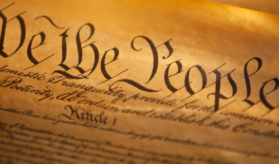

The Impeachment of Federal Officers
|
||
| Home | Sources | Quiz |

IntroductionThis webpage provides information about the impeachment of federal officers. Impeachment is the process of trying a government official for wrongdoing. The ability to impeach is given to the government by the United States constitution in Article 2. Officials can be impeached from their positions for a variety of reasons some of which include treason, bribery, abuse of power, and other criminal offenses, as stated by the United States Constitution. How does Impeachment work?The process to impeach typically begins with the house of representatives, in which it is decided whether or not there are grounds for impeachment. If the house of representatives deems that there are grounds, the official in question is allowed to a trial in which it is decided whether they are guilty or not guilty and if found guilty, the official is impeached. The constitution of the united states states that “The President, Vice President and all civil Officers of the United States, shall be removed from Office on Impeachment for, and Conviction of, Treason, Bribery, or other high Crimes and Misdemeanors.” As far as impeaching officers goes, causes for impeachment typically revolve around abuse of powers including brutality and false testimonies. After the United States Supreme court decision of Brady v. Maryland (1963) All U.S Law Enforcement Organizations are required to provide “Any material relevant to the credibility of witnesses, including, but not limited to, police officers.” Impeachment of federal officersImpeachment of federal officers is a crucial mechanism designed to maintain accountability and integrity within the government. The process serves as a powerful tool to address misconduct and ensure that public officials uphold their responsibilities ethically. Grounds for impeachment goes beyond criminal offenses and may include violations of public trust, dereliction of duty, and actions detrimental to the democratic principles upon which the United States is built. This constitutional process reflects the commitment to preserving the democratic values enshrined in the nation's foundation, emphasizing that no individual, regardless of their position, is immune to accountability. As such, the impeachment of officers plays a vital role in safeguarding the democratic ideals and principles that form the cornerstone of the United States governance. Who’s been Impeached?Due to the fact that impeachment is a long and complicated process which typically happens to officials with higher government positions, I was unable to find a very specific list, but some well known impeachments of United states presidents are listed below.
The Brady listThe Brady list is a site provided by the United States government with information about impeachment so that the public can stay informed. The list promotes transparency and accountability in the criminal justice system, allowing scrutiny of law enforcement actions and fostering public confidence. Acting as a deterrent against prosecutorial misconduct, it underscores the importance of fulfilling ethical obligations for justice. While essential, the effectiveness of the Brady List relies on prosecutors' diligence, with ongoing efforts to enhance implementation and transparency, including the establishment of review boards and advocating for stronger enforcement. Overall, it plays a crucial role in ensuring fair trials and protecting against wrongful convictions through transparency, accountability, and evidence disclosure. Impeachment and the State of VirginiaIn the Virginia Legislature article IV, it is stated that In the Commonwealth Of Virginia, officials including the Governor, Lieutenant Governor, Attorney General, judges, State Corporation Commission members, and those appointed or elected by the General Assembly can be impeached by the House of Delegates for offenses like malfeasance, corruption, neglect of duty, or high crimes. The Senate has the exclusive power to conduct impeachment trials, requiring a two-thirds majority for conviction. Penalties include removal from office and disqualification from future positions, but the convicted individual remains liable to legal proceedings. The Senate can conduct impeachment trials even during the General Assembly's recess. More Information in VideosDonald Trump Impeachment |